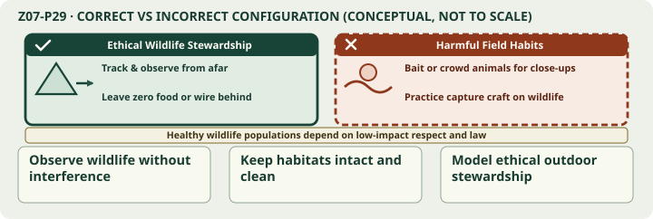

Z07-P29 · Traps and snares · New manuscript
Conservation Stewardship: Observation Over Capture Ethics
Reinforce non-extractive wildlife stewardship and ecological respect across recreational backcountry travel.
When it applies · All recreational camping, hiking, and wilderness education.
Equipment · Binoculars, field notebook, Leave No Trace practices.

Actions
- Adopt observation-over-capture as the default backcountry ethic: watching tracks, vocalizations, and habitat interactions yields rich ecological skill with zero animal distress.[L02, L05, L13]
- Keep wild animals wild by securing all camp food, avoiding wildlife chases or baiting, and leaving nesting, denning, and migration corridors intact.[L05, L12, L13]
- Recognize that lawful sustainable wildlife management relies on public-agency science, strict seasons, and ethical stewardship—never ad-hoc backcountry capture.[L01, L02, L05]
Failure recognition · Treating wildlife as props or casual survival-craft targets undermines conservation ethics, degrades habitats, and risks disease or legal charges.[L01, L05, L13]
Verify · Backcountry activities leave zero habitat disturbance, zero food conditioning, and zero capture attempts.[L05, L13]
Stop or change course · Stop any educational exercise that stresses wild animals, alters active habitats, or blurs legal harvest boundaries.[L01, L05, L13]
Evidence and editorial notes
- L01 · Minnesota DNR · Minnesota Trapping Regulations and Fur Harvest Rules (Current web edition)
- Section: Minnesota trapping licensing, seasons, and statutory limits · Conditions: Any regulated trapping activity or legal reference in Minnesota
Support: Trapping is strictly regulated by license, season, species, trap type, set location, check intervals, and landowner permission; unauthorized trapping is illegal.
Limitations: Emergency narratives never create an exemption to set traps or snares; verify current statute and DNR handbook every season. · Conflicting evidence: None noted.
Editorial note: Primary Z07 legal boundary. · Specialist reviewer: Wildlife law and DNR enforcement reviewer
Primary source · checked 2026-11-25 - L02 · Association of Fish & Wildlife Agencies · Best Management Practices for Trapping and Furbearer Welfare (Current web edition)
- Section: AFWA Best Management Practices for animal welfare and selectivity · Conditions: Evaluating trapping principles, welfare, and non-target risk
Support: AFWA BMPs evaluate regulated devices on animal welfare, efficiency, selectivity, user safety, and practicality through scientific testing.
Limitations: Improvised traps and snares lack scientific welfare testing and selectivity controls, causing severe injury and non-target capture. · Conflicting evidence: None noted.
Editorial note: Anchors Z07 welfare & conceptual classification without building instructions. · Specialist reviewer: Wildlife welfare scientist
Primary source · checked 2026-11-25
Current assessment · A04-L02 (2026-11-25) · Bounded support confirmed from an alternate source (A04): Supports regulated-device evaluation criteria in the program. Minnesota hunting index is the wrong evidence section. No device construction or authorization follows. Limits: Specialist review PENDING (Wildlife welfare scientist); publication HOLD. All release decisions pending. - L05 · Minnesota DNR · Nongame Wildlife Program and Protected Species (Current web edition)
- Section: Nongame wildlife protection and ecological role · Conditions: Non-harvested wildlife across forests, wetlands, and prairies
Support: Most wild mammals, songbirds, raptors, and reptiles are legally protected nongame species that may not be captured or killed.
Limitations: Ecological stewardship prioritizes observation and avoidance over capture. · Conflicting evidence: None noted.
Editorial note: Frames Z07 ecological ethics. · Specialist reviewer: Nongame wildlife biologist
Primary source · checked 2026-11-25 - L12 · Minnesota DNR · Living with Black Bears and Encounter Safety (Current web edition)
- Section: Attractant, bait-site, and carrion encounter avoidance · Conditions: Field travel near carrion, bait stations, or water-edge cubbies
Support: Strong odors, feathers, flagged stakes, or disturbed shoreline funnels can indicate carrion, bear feeding sites, or active regulated sets.
Limitations: Route wide around suspect attractants and keep companions and pets close. · Conflicting evidence: None noted.
Editorial note: Hazard-recognition field cue for Z07. · Specialist reviewer: Wildlife safety specialist
Primary source · checked 2026-11-25
Current assessment · A04-L12 (2026-11-25) · Open: support partial or missing (A04): No source supports identifying the specific hazard from a smell, flag or other single cue. Retain A03 avoidance and reporting. Limits: Specialist review PENDING (Wildlife safety specialist); publication HOLD. All release decisions pending. - L13 · Minnesota DNR · Scientific and Natural Areas Visitor Rules and Prohibitions (Current web edition)
- Section: Zero-disturbance scientific preserve ethics · Conditions: Sensitive habitats, wetlands, and rare-species corridors
Support: Natural-area conservation prohibits altering vegetation, digging pits, or leaving wire/cordage debris that entangles wildlife indefinitely.
Limitations: Abandoned wire or monofilament creates persistent ghost-entanglement hazards. · Conflicting evidence: None noted.
Editorial note: Addresses ghost-gear and environmental restriction. · Specialist reviewer: Conservation ecologist
Primary source · checked 2026-11-25
Current assessment · A04-L13 (2026-11-25) · Reopened: earlier closure narrowed (A04): Site rules support protection and restrictions. They do not establish a universal rule across land classes or an indefinite entanglement duration. Limits: Specialist review PENDING (Conservation ecologist); publication HOLD. All release decisions pending.
Source lineage · New manuscript (Z07 P18 ethical considerations) · Classification · New manuscript.